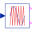

BooleanReplicatorBoolean signal replicator |
Information
This information is part of the Modelica Standard Library maintained by the Modelica Association.
This block replicates the Boolean input signal to an array of nout identical Boolean output signals.
Parameters (1)
| nout |
Value: 1 Type: Integer Description: Number of outputs |
|---|
Connectors (2)
| u |
Type: BooleanInput Description: Connector of Boolean input signal |
|
|---|---|---|
| y |
Type: BooleanOutput[nout] Description: Connector of Boolean output signals |
Used in Examples (3)
|
Modelica.Electrical.Machines.Examples.SynchronousInductionMachines Test example: ElectricalExcitedSynchronousInductionMachine starting direct on line |
|
|
Modelica.Magnetic.FundamentalWave.Examples.BasicMachines ElectricalExcitedSynchronousInductionMachine starting direct on line |
|
|
Modelica.Magnetic.FundamentalWave.Examples.BasicMachines Test example: ElectricalExcitedSynchronousInductionMachine with voltage controller |
Used in Components (2)
|  |
Modelica.Electrical.PowerConverters.DCAC.Control Intersective PWM |
|
Modelica.Electrical.PowerConverters.Enable Partial model providing enable parameter and optional enable input |